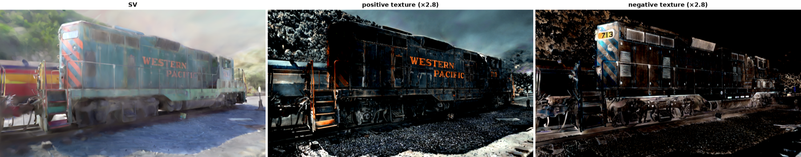

(Mip-NeRF 360)
(8K, shared)
& Galaxy S24
lookups at inference
Abstract
Recent extensions of 3D Gaussian Splatting capture fine color detail using hash-grid based appearance parameterization, but pay a high per-fragment cost from neural field queries during rendering. We introduce a decoupled radiance representation that models low-frequency geometry and view-dependent appearance with 2D surfels, while representing high-frequency texture as a view-independent residual. Because the residual is view independent, we bake it into a compact, fixed-size texture that each surfel probes, so inference reduces to pure hardware texture sampling with no neural queries. Combined with sparsity-enhancing optimization, our method renders significantly faster and sparser than prior work while preserving perceptual fidelity, reaching real-time 4K rates on consumer hardware and real-time rendering on mobile devices.
Key Ideas
- View-independent texture residual. Restricting the residual to be view independent is what makes it bakeable, removing per-fragment neural queries at inference.
- Compact shared texture via surfel probing. Surfels learn probes into a single fixed-size texture image, giving an order-of-magnitude smaller footprint than per-surfel atlases at better perceptual quality.
- Hardware-native rendering. Inference is nothing but GPU texture lookups, which run fast on the texture-sampling hardware every phone already has.
- Sparse geometry. Decoupling appearance from geometry lets the surfels stay sparse instead of splitting to fit texture, lowering primitive count and overdraw.
Method
static/images/pipeline.pngVideo & Interactive Demo
<video> or YouTube embed hereResults


Mip-NeRF 360 (RTX 5090)
Results
Rendering throughput on the Mip-NeRF 360 benchmark, measured on a single RTX 5090.
All timings use per-frame cuda.Event pairs, 50 warm-up and 400 timed frames,
over each scene's held-out test cameras.
| Scene | Resolution | Prims (ours) | Prims (FastGS) | Neural FPS | Ours FPS | FastGS FPS | Speed-up | PSNR (ours) | PSNR (FastGS) |
|---|---|---|---|---|---|---|---|---|---|
| bicycle | 1237×822 | 160,835 | 539,624 | 111 | 1385 | 1204 | 1.15× | 23.91 | 24.62 |
| bonsai | 1559×1039 | 92,489 | 275,719 | 117 | 1261 | 1241 | 1.02× | 31.81 | 32.12 |
| counter | 1558×1038 | 68,466 | 208,171 | 108 | 1442 | 1207 | 1.19× | 28.90 | 29.08 |
| flowers | 1256×828 | 184,951 | 489,951 | 100 | 1291 | 1173 | 1.10× | 20.62 | 21.31 |
| garden | 1297×840 | 148,803 | 660,711 | 117 | 1943 | 1145 | 1.70× | 26.71 | 27.32 |
| kitchen | 1558×1039 | 119,525 | 379,671 | 93 | 1495 | 1059 | 1.41× | 30.65 | 31.74 |
| room | 1557×1038 | 63,164 | 207,167 | 133 | 1792 | 1343 | 1.33× | 30.73 | 31.74 |
| stump | 1245×825 | 96,471 | 392,348 | 132 | 1394 | 1276 | 1.09× | 25.54 | 26.54 |
| treehill | 1267×832 | 175,459 | 394,335 | 98 | 1105 | 1286 | 0.86× | 22.29 | 22.85 |
| mean | — | 123,351 | 394,188 | 112 | 1456 | 1215 | 1.20× | 26.80 | 27.48 |
Neural FPS is our own pre-baking renderer, which evaluates the hash-grid and MLP per fragment; baking replaces it with a single hardware texture fetch. Our method carries 3.2× fewer primitives on average, renders 1.20× faster than FastGS, and is 13× faster than the neural renderer it replaces. FastGS reaches a slightly higher mean PSNR (+0.68 dB), consistent with its larger primitive budget. Treehill is our one regression; its surfels are unusually large, so the per-fragment footprint outweighs the primitive-count advantage.
Protocol. FastGS checkpoints were trained with its own released script
(train_base.sh), which loads images at the 3DGS default (long edge capped at
1600 px). We render them at the standard Mip-NeRF 360 evaluation resolution
(images_4 outdoors, images_2 indoors) so both methods are measured on
identical images. Retraining FastGS at that resolution changes its primitive count by
−8 % and its throughput by <3 %, so this does not materially affect the
comparison.
BibTeX
@article{kelkar2026bake,
title = {Bake It Till You Make It: Ultrafast Spatial Texture-Surfel Splatting},
author = {Kelkar, Neel and Niedermayr, Simon and Petkov, Kaloian and
Engel, Klaus and Westermann, R{\"u}diger},
journal = {arXiv preprint arXiv:XXXX.XXXXX},
year = {2026}
}